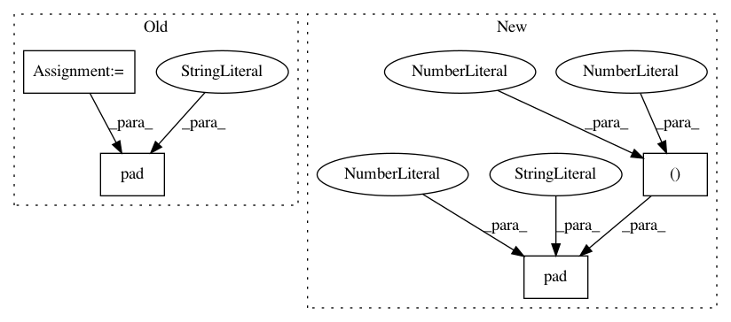

520e8fb57b890a7249334d9e90c9ad209d0b849f,modules.py,retina,extract_patch,#retina#Any#Any#Any#,73
Before Change
(0, 0), (size//2+1, size//2+1),
(size//2+1, size//2+1), (0, 0),
]
p = p.numpy()
p = np.pad(p, pad_dims, mode="constant")
p = torch.from_numpy(p)
// add correction factor
from_x += (size//2+1)
After Change
// pad tensor in case exceeds
if self.exceeds(from_x, to_x, from_y, to_y, T):
pad_dims = (
size//2+1, size//2+1,
size//2+1, size//2+1,
0, 0,
0, 0,
)
im = F.pad(im, pad_dims, "constant", 0)
// add correction factor
from_x += (size//2+1)
to_x += (size//2+1)
In pattern: SUPERPATTERN
Frequency: 3
Non-data size: 4
Instances
Project Name: kevinzakka/recurrent-visual-attention
Commit Name: 520e8fb57b890a7249334d9e90c9ad209d0b849f
Time: 2018-02-10
Author: kevinarmandzakka@gmail.com
File Name: modules.py
Class Name: retina
Method Name: extract_patch
Project Name: jhfjhfj1/autokeras
Commit Name: 1a010ccffb1c80997260b9fe7cf3b7a3887b13ae
Time: 2017-12-19
Author: jhfjhfj1@gmail.com
File Name: autokeras/net_combinator.py
Class Name:
Method Name: pad_filter